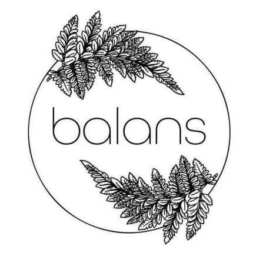

Recommended Places in Poznań
Here's a full list of our favorite places to eat in the city. Click to find them on Facebook or Google Maps!
77 Sushi
Fresh sushi rolls with unique fusion flavors. Elegant interior and cozy atmosphere.
Facebook |
Google Maps
KimChicken
Korean-style fried chicken that’s crispy and flavorful. Great for quick lunches and dinners.
Facebook |
Google Maps
Minstable
Trendy Asian street food spot in the heart of the city. Known for bao buns and ramen bowls.
Facebook |
Google Maps
Khao San
Authentic Thai food with amazing pad thai and curry. Small venue but great flavors.
Facebook |
Google Maps
Manekin
Famous for sweet and savory crepes. Popular student spot for lunch and casual dinners.
Facebook |
Google Maps
Para Bar
Asian-style street food and bao buns with a modern twist. A casual spot for quick and flavorful meals.
Facebook |
Google Maps

Balans
Healthy cuisine with vegetarian and steamed options. Ideal for clean eating in a cozy atmosphere.
Facebook |
Google Maps
Meet Meat – Woźna 18
Premium steaks, elegant service and fine wines. Ideal for special occasions or date nights.
Facebook |
Google Maps